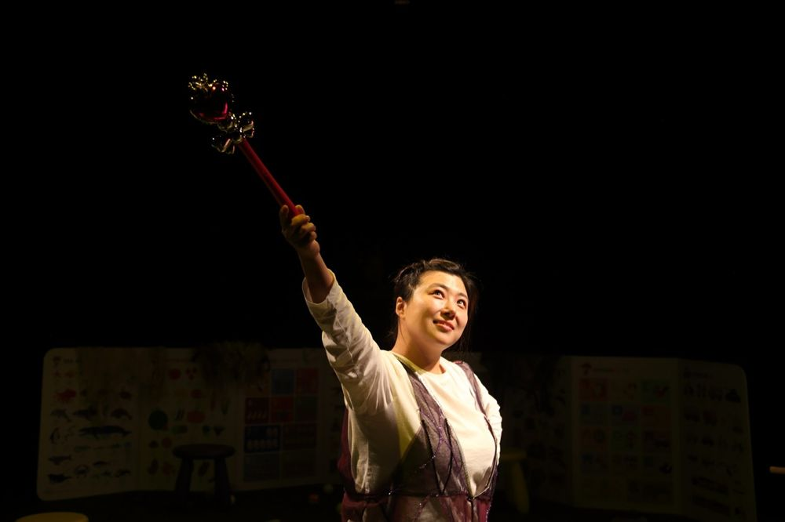

공동창작, 박현지 연출

여자 배우들은 아이가 생기면 어디로 갈까. 왜 안 보일까. 임신과 출산과 육아, 그리고 연극하기는 양립할 수 있을까. 어느 날 갑자기 불어온 회오리를 타고 겪어 본 적 없는 세계에 떨어진 사람들, 캔자스를 겨우 떠나왔지만 애써 다시 캔자스로 돌아가기를 선택하는 사람들의 마음을 들여다보는, '행복하게 오래오래 살았습니다'로 끝나지 않는 동화.
2021.10.27–30 / 신촌극장
작: 공동창작
연출: 박현지
출연: 나유진, 이여진, 임정희
드라마터지: 김현지
음악: 박고은
공간: 김혜림
의상: 김경희
조명: 김소현
그래픽디자인: 올림픽(all limpic)
오퍼레이터: 김다솜, 김하희
기록촬영: 한문희
제작: 임정희, 그린피그
후원: 서울문화재단
이전: 〈목선〉 | 다음: 〈바바리맨-킬라이크아이두〉
아카이브로 돌아가기 | 아무 작품이나
발행일 2026.11.10